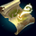
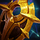
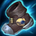
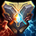
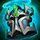
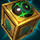

Thresh tárgyai

Világatlasz
A játék elején mindenképp egy Világatlasszal kell kezdeni, mivel a tárgy nélkül kevés aranyra teszel szert.

Égi ellenállás
Ez az 5 Világatlasz fejlesztés közül a legjobb Thresh-re, mivel a pajzs nagyon hasznos a csapatharcokban.
A látó lencséje
Amint kiszedted az Égi ellenállást, cseréld le a korábbi láthatatlan őrszemedet A látó lencséjére.

Higanyléptek
Az egyik legjobb cipő, legtöbb játékban ezzel leszel a legerősebb.
Az iron solarik medálja
Thresh első kész tárgya, csapatharcok során nagy erősítést biztosít a csapattagoknak.

Zeke szövetsége
Felerősíti Thresh végső képességét, vagyis az R képességét.

Lovagi eskü
Ha megvetted a Lovagi esküt, mindenképp keresd meg a legerősebb csapattársad, és rakd rá a tárgy aktív hatását.

Őrködő őrszemkő
Thresh utolsó tárgya, sok bónuszt ad.
Ellenőrző őrszem
El lehet 3 darabot tárolni az Őrködő őrszemkőben, és a játék végső fázisában nagyon hasznos tud lenni.
Ugrás az elejére